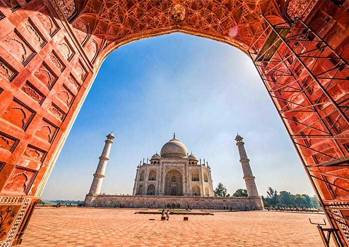
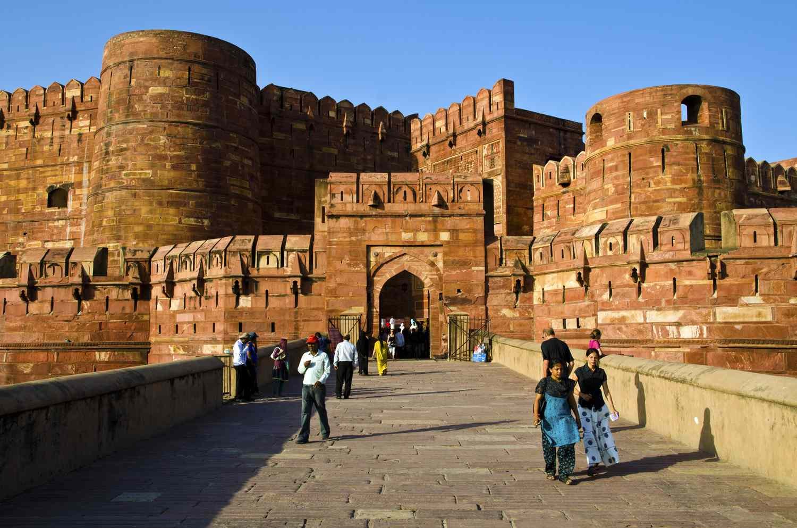
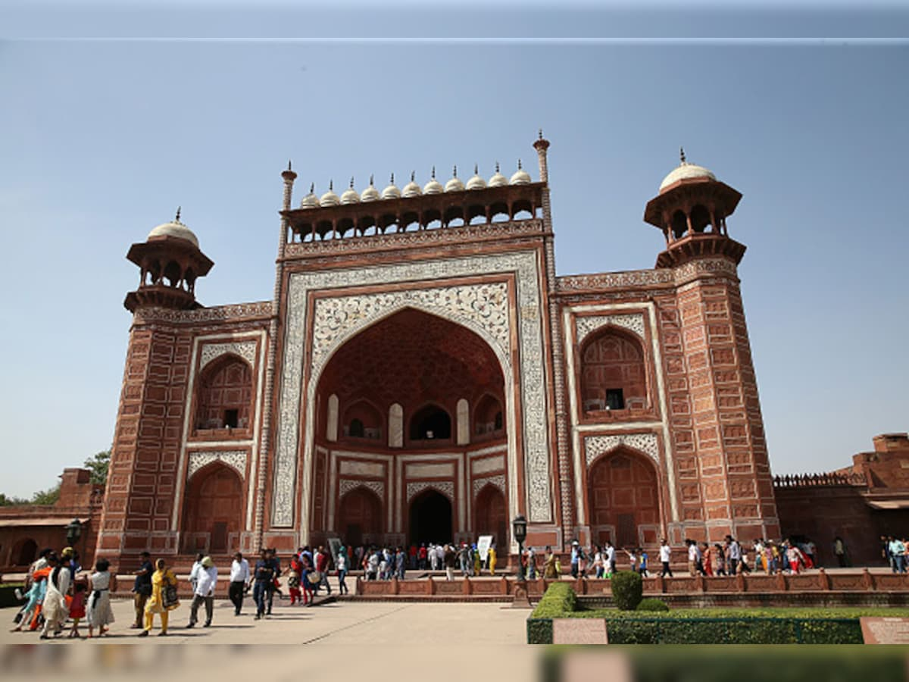
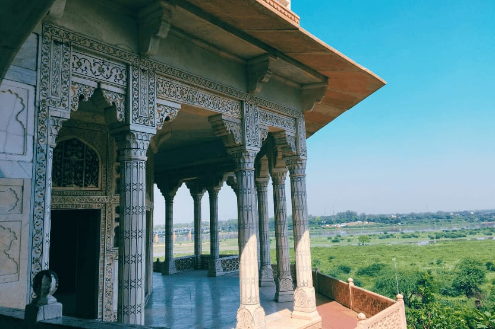
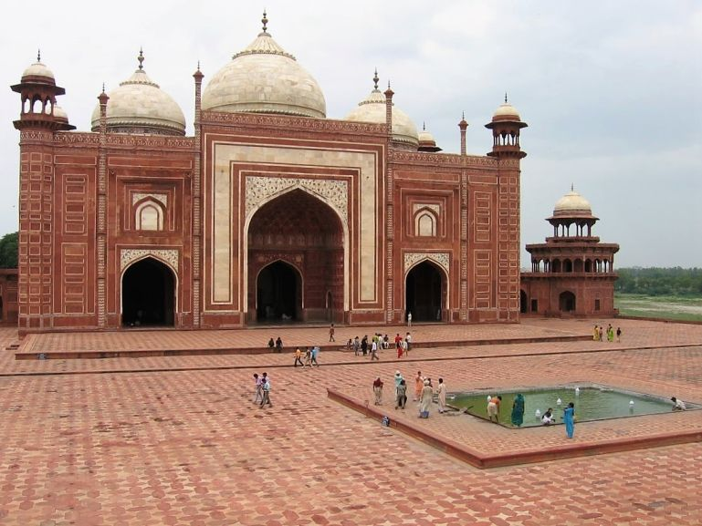

Agra is one of India's most famous tourist destinations. Located in Uttar Pradesh, it is home to the world-famous Taj Mahal, a UNESCO World Heritage Site. Agra attracts millions of visitors every year because of its rich Mughal history, beautiful monuments, and cultural heritage.
| S.No | Place | Location |
|---|---|---|
| 1 | Taj Mahal | Agra |
| 2 | Agra Fort | Agra |
| 3 | Fatehpur Sikri | Agra |
| 4 | Mehtab Bagh | Agra |
| 5 | Itmad-ud-Daulah's Tomb | Agra |
| 6 | Jama Masjid | Agra |
| 7 | Akbar's Tomb | Agra |
| 8 | Chini Ka Rauza | Agra |
| 9 | Wildlife SOS | Agra |
| 10 | Mughal Garden | Agra |




